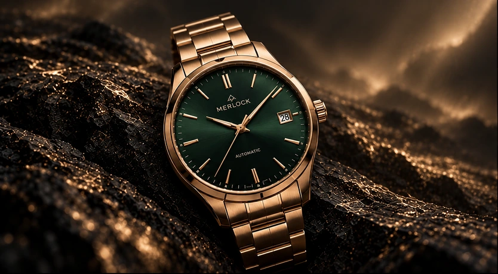

About us / History
A story shaped
by small details.
Merlock is a demo watch brand created to explore the relationship between personal style, thoughtful design and the way we experience an online collection.
Discover the collection →
01 · The beginning
An idea about character.
The project began with a simple idea: a watch can be a small detail that changes the character of an outfit. Merlock became a space to explore expressive dials, balanced proportions and a considered approach to presentation.
02 · The collection
Four moods. One perspective.
The twelve-piece collection brings together Celestial, Dress, Sport and Statement watches. Each group offers its own visual identity, connected by a shared attention to colour, texture and detail.
03 · The experience
From an edit to an experience.
The website grew to include saved favourites, watch comparisons, a shopping bag and a sample checkout, alongside tools for managing products and exploring demo sales trends. These features make the collection an interactive design project.
Our next chapter
Still taking shape.
Merlock continues to evolve through experiments in design and feedback on the shopping experience. This is a demonstration project: the watch imagery is AI-generated, specifications are illustrative, and sample orders involve no payment or physical delivery.